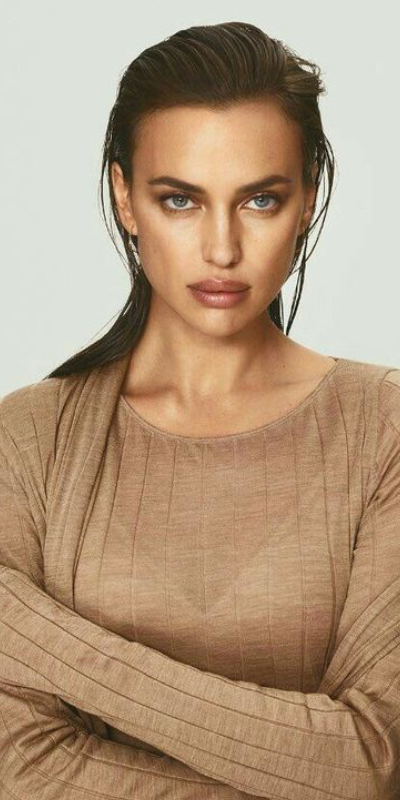
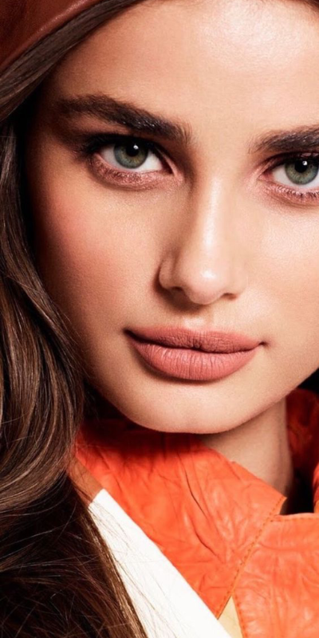
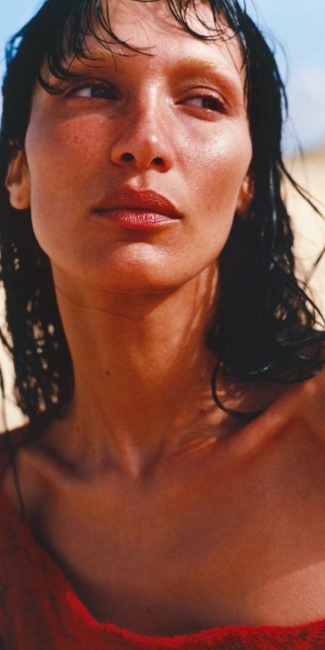
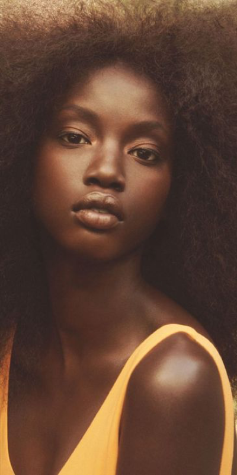

☰
IRINA SHAYK
|  |
Irina Shayk (born on 6 January 1986) in
Yemanzhelinsk, Russian SFSR, Soviet Union.
She is a Russian model. Shayk received
global recognition when she appeared as
the first Russian model on the cover of the
2011 Sports Illustrated Swimsuit Issue.
Models.com ranks her as an “Industry Icon”. |
TAYLOR HILL
|  |
|
BELLA HADID
|  |
|
ANOK YAI
|  |
|
Copyright © ZEMI 2023